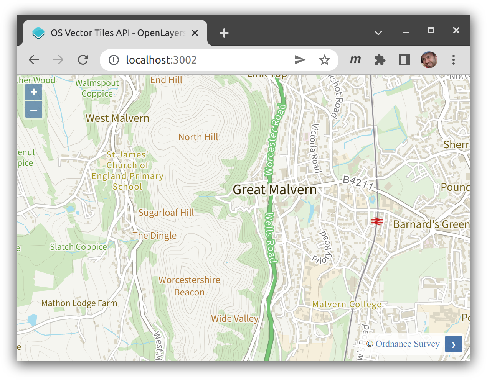

Adding a Vector Tile layer of Ordnance Survey data from the OS Data Hub to an OpenLayers map in Web Mercator is a little more work than expected as the JSON style document and associated JSON source document include paths for the default British National Grid tiles. The following is based on the output from create-ol-app and the OS Vector Tile API OpenLayers demo.
main.js
import './style.css';
import { Map, View } from 'ol';
import VectorTileLayer from 'ol/layer/VectorTile';
import VectorTile from 'ol/source/VectorTile';
import MVT from 'ol/format/MVT';
import { transform } from 'ol/proj';
import stylefunction from 'ol-mapbox-style/dist/stylefunction';
let osApiKey = 'YOUR_OS_API_KEY';
let vtLyr = new VectorTileLayer({
declutter: true,
// Set the layer style to null to avoid, features being displayed with
// the default OpenLayers vector styles before the OS styling is applied
style: null,
// As we're using the Web Mercator tiles we don't need to specify the source
// projection, TileGrid etc. as OpenLayers defaults to Web Mercator
source: new VectorTile({
format: new MVT(),
// Specify the tile URL including `srs=3857` so that we request
// Web Mercator tiles instead of British National Grid tiles which
// are the default when the `srs` parameter is missing
url:
'https://api.os.uk/maps/vector/v1/vts/tile/{z}/{y}/{x}.pbf?srs=3857&key=' + osApiKey,
attributions:
'© <a href="http://www.ordnancesurvey.co.uk/">Ordnance Survey</a>'
})
});
// Fetch the Web Mercator JSON style document, note the `srs=3857` query
// string parameter which is required
fetch(
'https://api.os.uk/maps/vector/v1/vts/resources/styles?srs=3857&key=' + osApiKey
)
.then((response) => response.json())
.then((styleJson) => {
// Look up the JSON sprite document URL and fetch it, note that we're
// updating the URL to include a `.json` extension
fetch(styleJson.sprite.replace('?key=', '.json?key='))
.then((response) => response.json())
.then((spritesJson) => {
// Update the sprite PNG URL to include the `.png` extension
let spritesPngUrl = styleJson.sprite.replace('?key=', '.png?key=');
// Call the stylefunction provided by the ol-mapbox-style package
// to apply a style Function to our VectorTileLayer instance. This
// will replace our `null` style and render the features as per
// the JSON style document
stylefunction(
vtLyr,
styleJson,
'esri',
vtLyr.getSource().getResolutions(),
spritesJson,
spritesPngUrl
);
});
});
const map = new Map({
target: 'map',
layers: [vtLyr],
view: new View({
center: transform([-2.333029, 52.109524], 'EPSG:4326', 'EPSG:3857'),
zoom: 14,
}),
});
index.html
<!DOCTYPE html>
<html lang="en">
<head>
<meta charset="UTF-8" />
<link rel="icon" type="image/x-icon" href="https://openlayers.org/favicon.ico" />
<meta name="viewport" content="width=device-width, initial-scale=1.0" />
<!-- Include the web font for the OS Vector Tile API styles -->
<link href="https://fonts.googleapis.com/css?family=Source+Sans+Pro:300,400,600" rel="stylesheet" />
<title>Using OpenLayers with Vite</title>
</head>
<body>
<div id="map"></div>
<script type="module" src="./main.js"></script>
</body>
</html>
See the comments in the code for an explanation of the steps involved. The you should end up with a map that looks something like this:

What about MapboxVector layer?
Ideally we would be able to use the ol/layer/MapboxVector~MapboxVectorLayer instance which would simplify things greatly:
let osApiKey = 'YOUR_OS_API_KEY';
let vtLyr = new MapboxVectorLayer({
styleUrl: 'https://api.os.uk/maps/vector/v1/vts/resources/styles?srs=3857&key=' + osApiKey
});
const map = new Map({
target: 'map',
layers: [vtLyr],
view: new View({
center: transform([-2.333029, 52.109524], 'EPSG:4326', 'EPSG:3857'),
zoom: 14,
}),
});
However as it currently stands the JSON style document returned by the OS Vector Tile API includes a sprite URL that doesn't include the srs=3857 parameter and the JSON source document which defines the URL for fetching tiles also doesn't include the srs parameter. Because of this we end up loading the Web Mercator style document which then references the British National Grid sprite and source documents which are incompatible.